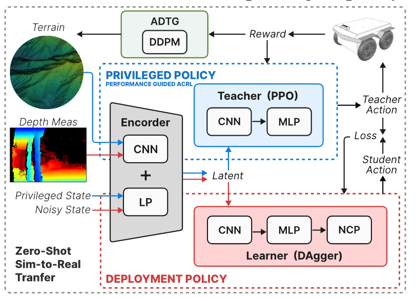
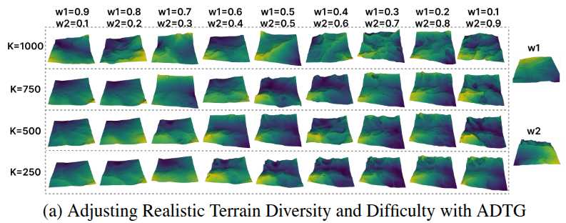
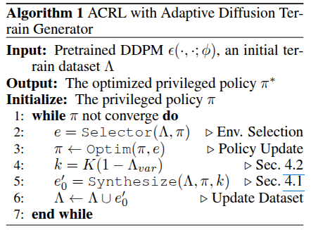
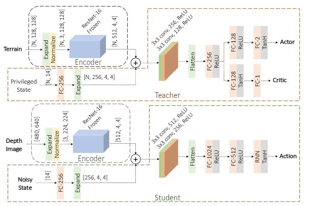
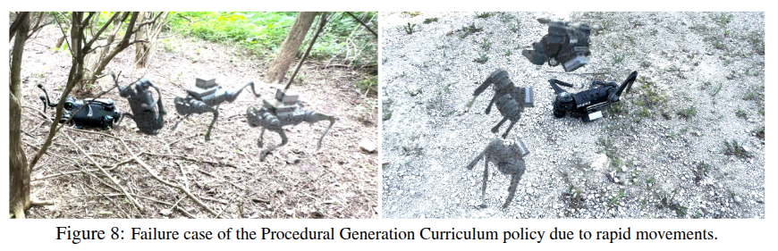

Diffusion 아이디어
- 논문 원문
- 코드 Repository : ROS 코드는 공개 안함
- 프로젝트 페이지
강화학습을 위한 적응형 디퓨전 지형 생성기
Adaptive Diffusion Terrain Generator (ADTG)
로봇이 울퉁불퉁한 지형을 안정적으로 주행하려면, 학습 단계에서 다양한 어려운 지형을 경험해야 합니다. 최근 강화학습(RL)을 활용한 로봇 제어가 발전하면서 시뮬레이션을 통한 환경 생성이 중요한 역할을 하고 있습니다. 그러나 기존의 환경 생성 방법들은 보통 수동 설계한 몇 가지 매개변수에 의존하기 때문에 지형의 다양성이나 현실감이 제한되는 문제가 있습니다. 이러한 한계 때문에 학습된 정책이 새로운 실제 환경에 일반화하기 어려운 경우가 많았습니다.
이 글에서는 CoRL 2024에 발표된 Adaptive Diffusion Terrain Generator (ADTG) 방법을 소개합니다. ADTG는 디퓨전 모델(DDPM, Denoising Diffusion Probabilistic Model)을 활용해 현재 정책의 성능에 맞춰 지형의 난이도와 다양성을 적응적으로 조절하며 새로운 지형을 생성하는 기법입니다. 요컨대, 학습이 진행됨에 따라 정책이 너무 익숙해지거나 쉽게 느끼는 환경은 더 복잡하게 만들고, 반대로 너무 어려운 환경은 피하면서 맞춤형 커리큘럼을 자동으로 구성해주는 환경 생성기라 볼 수 있습니다.
Diffusion Model 간단 소개
DDPM(Denoising Diffusion Probabilistic Model)은 최근 이미지 생성 등 분야에서 각광받는 생성 모델의 한 종류입니다. 기본 아이디어는 매우 간단합니다:
모델은 먼저 이미지나 신호에 점차적으로 노이즈를 추가해 데이터를 파괴(destroy)하는 과정을 정의하고, 역으로 그렇게 섞인 노이즈를 단계적으로 제거하며 새로운 샘플을 생성하는 과정을 학습합니다. 다시 말해, 앞방향 과정에서는 깨끗한 데이터에 조금씩 가우시안 노이즈를 덧붙여 최종적으로 거의 무작위 노이즈 상태까지 만드는 반면, 역방향 과정에서는 완전한 노이즈에서 시작해 한 단계씩 노이즈를 제거(denoise)하면서 데이터를 복원하듯이 샘플을 만들어내는 것입니다. 모델은 이러한 노이즈 추가/제거 과정 전체를 확률적으로 학습하여, 최종적으로 아무것도 없는 상태(백색 노이즈)에서 출발해도 훈련 데이터와 유사한 새로운 데이터를 생성할 수 있게 됩니다.

DDPM은 새로운 데이터를 만들어낼 때 다양하고 섬세한 제어가 가능하다는 것입니다. 예를 들어 조건부 샘플링이나 guidance 기법을 통해 원하는 스타일이나 특성을 유도할 수 있습니다. ADTG에서는 이러한 디퓨전 모델의 표현력과 제어 가능성을 지형 생성 문제에 적용합니다.
문제 정의
지형을 그리드 기반의 heightmap을 사용하여 표현하며, 그것을 \(e ∈ R^{W × H}\)로 나타냅니다. 여기서 \(W\)와 \(H\)는 각각 너비와 높이를 나타냅니다. \[ \theta^* = \arg \max_{\theta} \mathbb{E}_{a_t \sim \pi(a_t | s_t, e), s_0 \sim p(s_0), e \sim p(e), s_{t+1} \sim p(s_{t+1} | s_t, a_t, e)} \left[ \sum_{t=0}^{T} \gamma^t R(s_t, a_t) \right], \]
고도 \(e\)가 로봇의 이동에 제약을 부과하기 때문에, 위의 식을 통해 최적화된 정책은 본질적으로 높은 지형에서의 위험을 피할 수 있는 능력을 갖추고 있습니다. 정책의 성능에 따라 환경 분포 \(p(e)\)를 동적으로 진화시키는 것을 목표로 하여 훈련 효율성을 보장하고 현실적인 지형 고도를 생성합니다.
방법
지형 인식 정책 최적화를 위한 적응형 커리큘럼 학습
사실상 현실적으로 모든 heightmap에 대해서 학습할 수는 없습니다. 비현실적인 해법은 모든 가능한 지형 \(\Lambda = (e_1, ..., e_N)\)에서 훈련하는 것입니다. 이때 \(p(e)\)는 \(\Lambda\)에 대한 균일 분포로 설정됩니다.
효과적인 환경 생성기를 설계하는 것이 중요합니다.
현실 세계의 분포와 일치하는 현실적인 환경을 생성하고
현재 정책에 적절한 도전을 제공해야 합니다.
조정 가능한 미리 정의된 지형 유형은 제어가 가능하다는 장점이 있지만 다양성이 부족할 수 있으며, 생성 모델은 현실성 면에서는 뛰어나지만 정책에 정확히 맞춘 도전 과제 설정에는 한계가 있을 수 있습니다.
디퓨전으로 지형을 생성하는 방법
4장 Adaptive Diffusion Terrain Generator

- DDPM 잠재 공간에서 “쉬운” 지형과 “어려운” 지형 간의 보간을 통해 정책 훈련을 최적화하는 지형을 생성
- 훈련 데이터셋의 분산에 따라 초기 노이즈 입력을 조정하여 지형의 다양성을 풍부하게 하여 더 넓은 경험을 조성하고 보이지 않는 지형에서 정책의 일반화를 개선
ADTG의 핵심 아이디어는 이미 학습된 디퓨전 모델을 활용해 현재 정책에 가장 도움이 될 새로운 지형을 생성하되, 그 생성 과정을 현재 정책의 성능 지표로 안내(guidance)한다는 것입니다. 이를 위해 ADTG는 두 가지 주요 단계로 진행:
(1) 정책 성능 기반 지형 생성 (Performance-Guided Generation): DDPM의 latent variable (noise)을 합성하여 정책 훈련을 최적화하는 지형을 생성합니다.
(2) 초기 노이즈 조정을 통한 훈련 데이터셋 다양화 (Diversifying Training Dataset): 훈련 데이터셋의 variance에 따라 초기 노이즈 수준을 조절하여 지형 다양성을 증가시키고 정책의 일반화 능력을 향상시킵니다.
1. 초기 노이즈 최적화와 latent 보간
일반적으로 디퓨전 모델로 새로운 샘플을 생성하려면 우선 초기 노이즈(\(e_K\))를 무작위로 뽑아서 역확산(reverse diffusion)을 진행합니다. 하지만 ADTG에서는 이 초기 노이즈를 무작위로 선택하지 않고 최적화합니다.
- \(e\), \(e_0\), \(e_k\)를 훈련 데이터셋의 환경, DDPM을 통해 생성된 지형, 그리고 시간 단계 k의 DDPM 잠재 변수로 각각 나타냅니다. 이 세 변수는 모두 동일한 크기 \(R^{W × H}\)
구체적으로, 현재 훈련 데이터셋에 포함된 지형들 중에서 일부를 선택하고, 각 지형 \(e_i\)에 대해 디퓨전 앞방향을 \(k\) 단계 진행하여 latent 표현 \(e_i^k\)를 얻습니다. 여기서 \(k\)는 일종의 중간 노이즈 수준을 나타내는 하이퍼파라미터로, \(k=0\)이면 원본 지형(노이즈 없음), \(k=K\)이면 완전한 가우시안 노이즈에 해당합니다. 이렇게 얻은 여러 개의 부분 노이즈 지형(latent)들을 합성(combine)하여 새로운 초기 노이즈 \(e'_k\)를 만들고자 하는데, 단순 평균이 아니라 정책의 성능에 기반한 가중 합으로 결합하는 것이 포인트입니다.
\[e'_k = \frac{\sum_i w(e_i, \pi)\; e_i^k}{\sum_i w(e_i, \pi)}\]
위 식에서 \(w(e_i, \pi)\)는 지형 \(e_i\)에 대한 현재 정책 \(\pi\)의 성능에 따라 달라지는 가중치입니다. 예를 들어, 어떤 지형에서 정책이 너무 쉽게 100% 성공한다면 그 지형은 학습에 덜 유용할 수 있고(너무 쉬움), 반대로 성공률이 0%에 가깝다면 현재 정책 수준에서는 너무 어려운 환경일 것입니다. ADTG는 가장 학습 효과가 좋은 중간 난이도를 목표로 가중치를 부여합니다.
논문에서는 정책의 성공률을 난이도 척도 \(s(e,\pi)\)로 사용하고, 목표 성공률을 \(\bar{s}\)로 정한 뒤 각 지형의 가중치를 \[w(e,\pi) = \exp\!\Big(-\frac{(s(e,\pi)-\bar{s})^2}{\sigma^2}\Big)\] 와 같이 설정합니다. 즉, 성공률 \(s\)가 목표 \(\bar{s}\)와 가까운 지형일수록 가중치가 높아지고, 너무 쉽거나 너무 어려워서 성공률이 극단적인 지형은 가중치가 낮아지도록 가우시안 형태로 penalize한 것입니다. 이렇게 하면 현재 정책에게 적절한 난이도의 지형들이 초기 노이즈 합성에 더 큰 기여를 하게 됩니다.
결과적으로, \(e'_k\)는 여러 기존 지형들의 특징을 성능 기반 가중치로 블렌딩한 중간 노이즈 상태
이 \(e'_k\)를 디퓨전 모델의 역방향 과정에 투입하여 \(k\)부터 \(0\)까지 거꾸로 진행하면 최종적으로 새로운 지형 \(e'_0\)가 생성됩니다. 이 지형은 기여한 지형들로부터 전반적인 기복 패턴과 같은 고수준의 특징을 물려받되, 세부적으로는 디퓨전 모델의 확률적 생성 특성 덕분에 완전히 동일하지는 않은 변형된 지형이 됩니다. 쉽게 말하면, 여러 환경의 DNA를 섞어서 새로운 난이도의 환경을 만들어내는 것과 비슷합니다. 가중치 \(w_i\)를 어떻게 주느냐에 따라 난이도를 조절할 수 있는데요, 하나의 환경에 무게를 많이 두면 그 환경과 비슷한 지형이 나오고, 여러 환경을 고르게 섞으면 좀 더 새로운 느낌의 지형이 만들어집니다.
2. diffusion 노이즈 단계 조절로 다양성 확보
위 과정만으로도 정책에 맞춘 난이도의 지형을 만들어낼 수 있지만, 학습이 진행됨에 따라 훈련 데이터셋의 다양성이 점점 부족해지는 문제가 발생할 수 있습니다. 정책이 성장하면서 기존 지형들을 모두 정복하게 되면, 아무리 그들을 섞는다 해도 더 이상 새로운 자극을 주기가 어렵기 때문입니다. 이때 필요한 것이 지형의 완전히 새로운 형태, 즉 다양성(diversity)입니다.
ADTG는 이를 위해 디퓨전 과정의 시작 단계 \(k\)를 동적으로 조절하여 출력 지형의 참신함(novelty)을 제어합니다.
- 디퓨전의 노이즈 단계 \(k\)를 크게 하면 할수록 최종 생성되는 지형이 본래 지형들과 동떨어진 새로운 모습을 띠게 되고,
- 반대로 \(k\)를 작게 (즉 기존 지형에 적은 노이즈만 추가) 하면 생성물이 원래 환경들과 유사한 모습을 유지한다는 점입니다.
- 무작위 노이즈에서 시작하면 디퓨전 모델이 다양한 결과를 만들 수 있지만, 원본에 가까운 상태에서 시작하면 변화의 폭이 적기 때문입니다.

실제로 논문 Figure 1-(a)에서도 forward step \(K\)(노이즈 단계)가 증가할수록 생성 지형의 분산(다양성)이 커지는 모습을 확인할 수 있습니다 TG는 현재 훈련 데이터셋의 다양성 지표를 측정하여, 다양성이 낮다고 판단되면 더 높은 \(k\)를 사용하고, 다양성이 충분하면 낮은 \(k\)를 사용하도록 합니다. 구체적으로, 지형 데이터셋의 표본들에 대해 주성분 분석(PCA)으로 몇 가지 주요 성분의 분산 \(\Lambda_{\text{var}}\)을 계산하고, 이를 0~1로 정규화하여 현재 데이터셋 다양성 척도로 삼습니다.
\(k = K (1 - \Lambda_{\text{var}})\)로 설정하는 선형 스케줄러를 사용
여기서 \(K\)는 디퓨전 모델의 최대 시간 단계(예: 모델이 학습된 총 노이즈 단계)입니다. 이 식의 의미는
데이터셋 다양성 \(\Lambda_{\text{var}}\)가 낮을수록 \(k\)를 크게 잡아 (즉 더 앞쪽 노이즈 단계에서 시작하여) 새롭고 다양한 지형을 만들고,
다양성이 높을수록 \(k\)를 작게 하여 기존과 비슷하지만 난이도 있는 지형을 만드는 쪽으로 조절한다는 것입니다.
이렇게 함으로써 학습이 진행되는 동안 지형 다양성의 정체로 인한 정책 성능 정체를 방지하고, 계속해서 훈련 환경 풀(pool)을 확장시킬 수 있습니다.
요약하면, ADTG는 난이도는 정책에 맞게 유지하되, 필요에 따라 노이즈를 더 섞어서 완전히 새로운 지형을 투입함으로써 커리큘럼의 폭을 넓히는 역할을 합니다.
3. Control-as-Inference로 본 노이즈 보간
흥미롭게도, ADTG의 이러한 노이즈 최적화 및 보간 전략은 제어를 추론 문제로 보는 관점(Control-as-Inference)으로 해석할 수도 있습니다. 원래 강화학습에서의 최적 제어 문제를 확률적 추론으로 나타낼 수 있다는 아이디어인데, 여기서는 반대로 환경을 생성하는 문제를 정책 향상이라는 목표 하에 하나의 추론과정으로 본 것입니다.
논문 부록(A)에 따르면, 앞서 “문제 정의”에서 소개한 식의 최적화는 KL 제어 이론을 통해 유도될 수 있다고 합니다. 새로운 지형을 생성하는 것은 곧 어떤 초기 노이즈 \(e_k\)를 선택하는 문제이며, 그 노이즈를 시작으로 디퓨전 모델을 통해 만들어진 최종 지형 \(e_0\)에서 정책의 성능 향상이 최대화되길 바랍니다. 이 목표를 직접 달성하려면 \(e_k\)에 대한 목표 함수(J)를 최대화하는 최적화를 해야겠지만, 정책 성능 향상은 시뮬레이션을 돌려봐야 알 수 있기 때문에 미분 가능하지 않고 비싼 계산입니다.
대신 이를 확률적 샘플링 문제로 변환하여, 성능이 좋은 환경이 나올 확률을 높이는 방식으로 접근합니다. 간단히 말해, “좋은 지형일수록 더 자주 뽑히도록 하자”는 것입니다.
수식적으로는 참조 분포 \(q(e_k)\) (예: 기존 데이터셋 지형들을 일정 수준 노이즈 넣은 분포)로부터 샘플링된 후보들 중 return(정책 향상)이 높은 쪽에 가중치를 실어주는 형태로 해석할 수 있고, 그 결과 중요도 샘플링(importance sampling)을 통해 최적 노이즈의 기대값을 구하면 바로 앞서 사용한 가중치 평균 식으로 수렴합니다. 제어-추론 관점에서 보면, 높은 보상을 줄 환경을 샘플링하는 확률분포의 기대값을 계산한 것과 같으며, 이것이 이론적으로 정당화된다는 것이죠.
정리하면, ADTG의 기법은 처음부터 끝까지 정책의 성능 신장이라는 목적을 갖고 설계되었고, 이를 확률적 생성 모델(Diffusion)의 제어 변수(초기 노이즈)를 학습자(정책)의 상태에 맞춰 조절함으로써 구현한 것이라 볼 수 있습니다. 이제 이러한 ADTG가 강화학습 커리큘럼과 어떻게 맞물려 돌아가는지 알아보겠습니다.
커리큘럼 강화학습과 ADTG의 연계
ADTG는 본질적으로 자동 커리큘럼을 구성하기 위한 환경 생성기로 설계되었습니다. 알고리즘의 작동 형태는 다음과 같습니다: 우선 초기에는 일부 기본 환경(elevation map)을 가지고 정책을 훈련하다가, 일정 주기마다 (혹은 병렬 학습 과정에서 지속적으로) 현재 정책에 맞는 새 지형을 생성하여 데이터셋에 추가합니다. 특히 매 반복(iteration)마다 현재 정책에게 가장 효과적인 학습 신호를 줄 환경을 선택하여 그 환경에서 정책을 조금 더 학습시킨 후, ADTG를 통해 새로운 환경을 만들어내는 식으로 진행됩니다. 이때 환경 선택은 앞서 정의한 가중치 함수 \(w(e,\pi)\)를 활용해 현재 가장 적절한 난이도의 지형을 뽑습니다. 반드시 최고 가중치 하나만 고르는 대신, 확률적으로 샘플링하여 편중되지 않게 다양한 환경을 경험하도록 할 수도 있습니다.

이러한 절차를 통해 정책과 환경이 함께 공진화(co-evolve)하게 됩니다.
정책이 발전하면 새로운 환경이 추가되고, 그 환경에서 다시 정책을 훈련하며, 시간이 지날수록 데이터셋은 점점 다양하고 어려운 지형들을 포함하게 됩니다. 이는 사람의 학습 과정에서 난이도를 조금씩 높여가며 실력을 향상시키는 교육 커리큘럼과 유사합니다. ADTG는 수동으로 커리큘럼을 설계하지 않아도 정책의 성공률 등 성능 측정치에 따라 난이도를 자동 조절해주므로, 일종의 자율 교사 역할을 수행한다고 볼 수 있습니다. 특히 강화학습에서 중요한 exploration-exploitation balance를 유지하면서도, 너무 쉬운 환경에 안주하거나 너무 어려운 환경에서 학습이 실패하는 상황을 방지하는 장점이 있습니다.
지형 데이터
부록 C
규칙한 지형 데이터셋. 데이터셋 생성을 위해 실제 고해상도 지형 데이터셋에서 얻은 래스터로 표현된 디지털 고도 모델(DEM)을 활용합니다. 전체 지도는 해상도가 0.1m인 [128 × 128] 크기의 타일로 나누어집니다. DDPM을 위한 3000개의 훈련 데이터와 알고리즘 성능 평가를 위한 100개의 평가 데이터가 특정 지리적 범위 내에서 무작위로 선택됩니다.
네트워크 구조

특권(교사) 정책과 배포(학생) 정책 모두 인코더-디코더 아키텍처를 기반으로 합니다. 인코더는 지형의 고도 또는 깊이 이미지를 입력으로 받아 특징 표현을 추출하며, 이를 위해 ResNet-18의 초기 16개 계층을 활용합니다.
배포 정책은 선형 및 각도 명령 생성을 위해 신경 회로 정책(NCP), 그중에서도 폐쇄형 연속 시간(CfC) 네트워크를 사용합니다. Vanilla RNN, LSTM, GRU, NCP 모두 충분한 학습 단계를 거치면 유사한 정확도를 달성할 수 있지만, NCP는 훨씬 적은 수의 매개변수로도 우수한 성능을 보여 최종적으로 선택되었습니다.
결과
실험 셋팅
Velodyne-16 LiDAR, RealSense D435i 카메라 및 3DM-GX5-25 IMU가 장착되어 있습니다. 풀, 숲, 건조, 녹, 진흙, 자갈, 사막 하드, 사막 터프 및 사막 전문가 등 9개의 다양한 대표 환경에서 테스트합니다.
실험 결과
ADTG의 저자들은 이 방법을 wheeled robot인 Jackal 및 Husky 로봇의 주행 정책 학습에 적용하여, 시뮬레이션과 실제 야외 환경 실험을 모두 진행했습니다. 30개의 다양하고 거친 지형을 준비해 여러 최신 강화학습 및 플래너 기반 방법들과 비교한 결과, ADTG로 학습한 정책이 성공률, 주행 안정성 등 여러 지표에서 가장 우수한 성능을 보였습니다. 특히 ADTG는 학습 속도도 빨라서, 복잡한 지형에 대한 정책 수렴 속도가 기존 커리큘럼 방식들보다 향상되었음을 확인했습니다.
더 놀라운 것은 sim-to-real 실험 결과로, 시뮬레이션에서 한 번도 보지 못한 새로운 실제 환경들(예: 숲, 진흙, 자갈, 모래 언덕 등 총 9종의 지형)에서 무학습 전이(Zero-shot)로 평가를 진행했는데도, ADTG로 훈련된 정책이 대부분의 환경에서 안정적으로 로봇을 주행시켰습니다 rics)). 반면, 고정된 절차적 생성이나 한정된 자연 지형 데이터로만 학습한 정책은 일부 현실 환경에서 거의 움직이지 못하거나 전복되는 등 일반화 성능이 떨어지는 모습을 보였습니다. 이 실험을 통해 ADTG의 적응형 생성이 시뮬레이션과 현실 사이의 갭을 줄여주고, 견고한 정책을 만들어내는 데 효과적임이 입증되었습니다.

위 이미지는 ADTG 저자들이 제시한 예시로, 좌측은 쉬운 환경의 지형 예시이고 우측은 어려운 환경 지형입니다. ADTG는 이러한 쉬운/어려운 환경 정보를 반영하여 중간 정도 난이도의 새로운 지형을 만들어냅니다. 또한 노이즈 수준 \(k\)를 조절함으로써, 필요할 경우 오른쪽 그림처럼 더 복잡하고 새로운 패턴의 지형도 생성해낼 수 있습니다. 이는 정책이 학습 초기에 단조로운 지형만 경험하는 것을 피하게 해주고, 후반에는 그동안 보지 못한 형태의 지형도 만나게 함으로써 예기치 않은 상황에 대한 대처 능력을 높여줍니다.
4족 보행 로봇 실험
실제 4족 보행 로봇 실험 환경에서는 지형의 크기가 [128 × 128], 수평 해상도는 0.1m입니다. 미끄러운 표면, 경사진 지형, 예측 불가능한 협곡 등 다양한 도전 과제를 포함한 총 9개의 환경이 사용되었습니다.
ADTG의 일반화 능력이 다양한 지형 조건에서도 유지되는지를 검증하기 위해, Jackal과 동일한 환경에서 Unitree Go1 4족 보행 로봇을 이용해 PGC 및 내장 MPC 컨트롤러와의 벤치마크 실험을 수행했습니다. ADTG와 PGC 정책은 모두 Parkour [66]의 “걷기” 정책을 기반으로 훈련되었습니다.
하이킹 실험 [5, 13]과 유사하게, 공정성을 위해 로봇은 MPC가 생성한 발자국 경로를 따라 총 1.2km에 달하는 루프를 연속 주행했으며, 경로 내 어려운 구간을 우회할 수 없는 경우 전복을 실패로 간주했습니다.
실험 결과, MPC는 총 6회 전복되었고, 이 중 3회는 고속 명령 수행 중, 나머지 3회는 자갈 및 모래 지형에서 발생했습니다. ADTG 정책은 고속 명령에 의한 2회의 실패가 있었으나 전반적으로 자연스럽고 안정적인 보행 자세를 유지했습니다. 반면, PGC 정책은 강한 수평 자세를 보였음에도 불구하고, 전 지형에서 발생한 갑작스러운 점프 동작으로 인해 총 11회의 전복이 발생했습니다.
이 같은 결과는 ADTG 정책이 다양한 환경에서 보다 안정적이고 일반화된 보행 행동을 성공적으로 학습했음을 보여줍니다. PGC 정책의 불안정성은 과도하게 도전적인, 비현실적인 지형 조건에서의 훈련으로 인해 유도되었을 가능성이 있습니다.
ADTG와 내장된 Go1의 MPC 보행 제어는 자연스러운 동작을 보였으며, 프로시저 생성 커리큘럼(PGC) 기반 정책에 비해 더 안정적인 자세를 유지했습니다. 반면, PGC 기반 정책은 전반적으로 양호하게 작동했지만, 때때로 갑작스러운 점프 동작으로 인해 로봇이 뒤집히는 문제가 발생했습니다. 이러한 문제는 PGC가 지나치게 도전적인, 비현실적인 지형에서 훈련되었기 때문일 수 있습니다.

디퓨전 기반 지형 생성의 장점과 향후 전망
ADTG를 통해 확인된 가장 큰 성과는, 딥러닝 기반 생성모델(디퓨전)을 활용하여 강화학습 환경을 더 똑똑하게 만들 수 있다는 점입니다. 전통적인 절차적 생성이나 무작위 환경 샘플링과 달리, 디퓨전 모델은 실제 지형 데이터를 학습하여 얻은 복잡한 분포에서 샘플을 뽑아내기 때문에 현실성과 다양성 측면에서 월등합니다. 예를 들어, 바위가 흩어진 경사면이나 물이 고인 진흙탕처럼 사람이 일일이 매개변수로 규정하기 어려운 지형도 디퓨전 모델은 데이터만 주어지면 생성해낼 수 있습니다. ADTG는 여기에 한 걸음 더 나아가 현재 정책에 유용한 방향으로 생성과정을 제어했기 때문에, 필요하지 않은 극단적으로 복잡한 지형을 억제하고 학습 효율을 극대화할 수 있었습니다 ted)) 향후 강화학습과 생성 AI의 접목이 얼마나 큰 잠재력을 갖는지 보여주는 예시라고 할 수 있습니다.
앞으로 이 분야에는 몇 가지 흥미로운 확장 가능성이 있습니다. 첫째, 본 논문에서는 지형의 높이맵(heightmap)에 대해서만 디퓨전 모델을 사용했지만, 이를 넘어 3차원 구조물이나 도시 환경 생성에도 비슷한 기법을 적용할 수 있을 것입니다. 예를 들어, 자율주행 자동차의 학습을 위해 도로 환경을 디퓨전 모델로 생성하고 난이도를 조절하는 식입니다. 둘째, 디퓨전 모델의 조건부 제어 능력을 활용하면 특정한 시나리오(예: “돌이 많은 지형” 혹은 “물이 있는 지형”)를 생성하도록 유도하는 것도 가능할 것입니다. 이는 단순히 난이도뿐 아니라 환경의 종류나 속성까지 커리큘럼에 넣을 수 있게 해줄 것입니다.
요약하면, Adaptive Diffusion Terrain Generator (ADTG)는 강화학습 에이전트를 위한 환경을 디퓨전 생성모델로 자동 생성하고, 이를 정책의 학습 상태에 맞춰 조절함으로써, 일종의 자동 커리큘럼을 구현한 기법입니다. 기존의 제한적인 환경 생성 방식의 한계를 극복하고, 학습된 정책이 더 넓은 분포의 지형에 견고하게 일반화할 수 있도록 돕는 점이 인상적입니다. ADTG는 강화학습 연구자들에게 환경 설계에 대한 부담을 줄이는 동시에, 학습 효율과 성능을 모두 높일 수 있는 새로운 방향을 제시합니다.
Reference
TODO
- DDPM Initial Noise Optimization